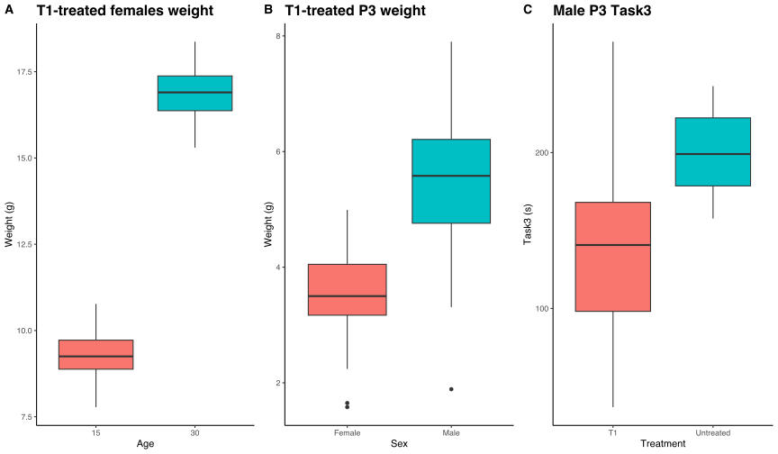
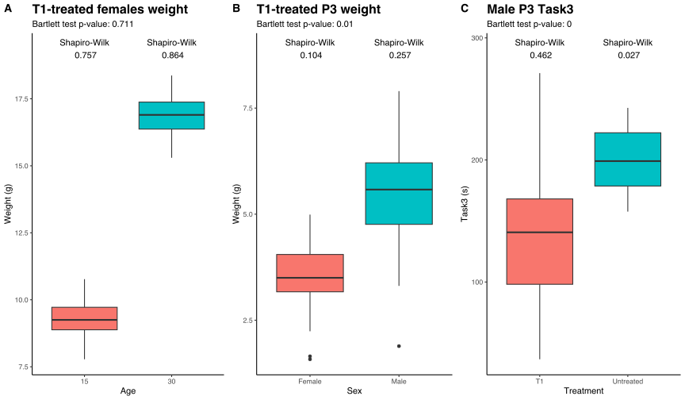
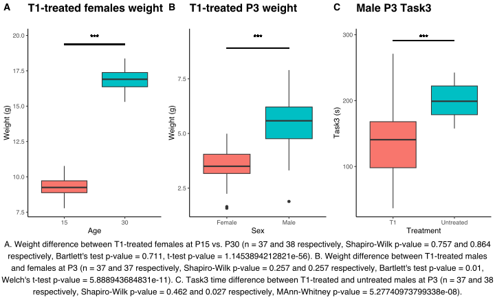

17 Comparing two groups
Another chapter, another test(s). Here, we will see how to compare two groups with continuous values: t test and Welch’s t-test (parametric data) and Wilkoxon and Mann-Whitney (non-parametric data).
We have already seen how to decide whether to use parametric and non-parametric tests (if you don’t remember, go and check the Intro to statistics chapter), so let’s start by loading our data and decide what we want to compare.
# 1. Load packages
suppressPackageStartupMessages(library(tidyverse))
suppressPackageStartupMessages(library(ggplot2))
suppressPackageStartupMessages(library(ggpubr))
suppressPackageStartupMessages(library(gginnards))
suppressPackageStartupMessages(library(glue))
# 2. Load data
df <- read.csv("data/Stat-test-dataset.csv")
# 3. Change come column types
df <- df %>%
mutate("sex" = factor(sex),
"treatment" = factor(treatment, levels = c("T1", "Untreated")),
"Task1" = factor(Task1, levels = c(1, 0)),
"Task2" = factor(Task2, levels = c(1, 0)),
)
str(df)'data.frame': 600 obs. of 7 variables:
$ sex : Factor w/ 2 levels "Female","Male": 2 1 2 1 2 1 2 1 2 1 ...
$ age : int 3 3 3 3 3 3 3 3 3 3 ...
$ treatment: Factor w/ 2 levels "T1","Untreated": 2 2 1 1 2 2 1 1 2 2 ...
$ weight : num 6.43 3.42 4.97 4.63 7.31 3.27 5.58 3.27 5.9 4.22 ...
$ Task1 : Factor w/ 2 levels "1","0": 1 2 2 2 1 1 1 1 2 1 ...
$ Task2 : Factor w/ 2 levels "1","0": 1 2 2 1 1 2 2 1 1 1 ...
$ Task3 : num 222.4 202.3 36.7 221.8 178.8 ...Now that we have our data loaded, there are the question we want to address:
- Do untreated females at P30 weight more than the ones at P15?
- At P3, is there a difference in weight in T1-treated mice between males and females?
- Do P30 males behave differently in Task3 based on treatment?
Let’s now decide which test to use for each question. We can start by looking at the boxplots and then check parametric assumptions (it’s important to do so!).
But first, we have to subset our dataframe:
# 1. Filter data
female_t1_weight_df <- df %>%
filter(age %in% c(15, 30) & sex == "Female" & treatment == "T1") %>%
select(sex, age, treatment, weight) %>%
mutate(age = factor(age))
t1_3_weight_df <- df %>%
filter(age == 3 & treatment == "T1") %>%
select(sex, age, treatment, weight)
male_3_task3_df <- df %>%
filter(age == 3 & sex == "Male") %>%
select(sex, age, treatment, Task3)Then, we will look at the boxplot:
female_t1_weight_boxplot <- ggplot(female_t1_weight_df) +
geom_boxplot(aes(x = age, y = weight, fill = age, group = age)) +
labs(x = "Age", y = "Weight (g)", title = "T1-treated females weight") +
theme_classic() +
theme(legend.position = "none",
plot.title = element_text(face = "bold", size = 16))
t1_3_weight_boxplot <- ggplot(t1_3_weight_df) +
geom_boxplot(aes(x = sex, y = weight, fill = sex, group = sex)) +
labs(x = "Sex", y = "Weight (g)", title = "T1-treated P3 weight") +
theme_classic() +
theme(legend.position = "none",
plot.title = element_text(face = "bold", size = 16))
male_3_task3_boxplot <- ggplot(male_3_task3_df) +
geom_boxplot(aes(x = treatment, y = Task3, fill = treatment, group = treatment)) +
labs(x = "Treatment", y = "Task3 (s)", title = "Male P3 Task3") +
theme_classic() +
theme(legend.position = "none",
plot.title = element_text(face = "bold", size = 16))
ggarrange(female_t1_weight_boxplot, t1_3_weight_boxplot, male_3_task3_boxplot, ncol = 3, nrow = 1, labels = "AUTO", align = "h")
Great, we can see some differences. And yes, there are some outliers in B., but we do not want to remove them now, you can try it if you want (it can be a useful exercise).
We now check the normality and homoschedasticity for each group, and then insert those info in the plot:
# 1. Shapiro test
female_t1_weight_shapiro <- female_t1_weight_df %>%
group_by(age) %>%
summarise(shap = shapiro.test(weight)$p.value)
t1_3_weight_shapiro <- t1_3_weight_df %>%
group_by(sex) %>%
summarise(shap = shapiro.test(weight)$p.value)
male_3_task3_shapiro <- male_3_task3_df %>%
group_by(treatment) %>%
summarise(shap = shapiro.test(Task3)$p.value)
# 2. Bartlett test
female_t1_weight_bartlett <- bartlett.test(female_t1_weight_df$weight, female_t1_weight_df$age)$p.value
t1_3_weight_bartlett <- bartlett.test(t1_3_weight_df$weight, t1_3_weight_df$sex)$p.value
male_3_task3_bartlett <- bartlett.test(male_3_task3_df$Task3, male_3_task3_df$treatment)$p.value
# 3. Get labels position
female_t1_weight_max <- max(female_t1_weight_df$weight, na.rm = T) + 1
t1_3_weight_max <- max(t1_3_weight_df$weight, na.rm = T) + 1
male_3_task3_max <- max(male_3_task3_df$Task3, na.rm = T) + 20
# 1. Create boxplots
female_t1_weight_boxplot <- female_t1_weight_boxplot +
geom_text(data = female_t1_weight_shapiro,
mapping = aes(x = age,
y = female_t1_weight_max,
label = paste("Shapiro-Wilk\n", round(shap, 3)))
) +
labs(subtitle = paste("Bartlett test p-value:", round(female_t1_weight_bartlett, 3)))
t1_3_weight_boxplot <- t1_3_weight_boxplot +
geom_text(data = t1_3_weight_shapiro,
mapping = aes(x = sex,
y = t1_3_weight_max,
label = paste("Shapiro-Wilk\n", round(shap, 3)))
) +
labs(subtitle = paste("Bartlett test p-value:", round(t1_3_weight_bartlett, 3)))
male_3_task3_boxplot <- male_3_task3_boxplot +
geom_text(data = male_3_task3_shapiro,
mapping = aes(x = treatment,
y = male_3_task3_max,
label = paste("Shapiro-Wilk\n", round(shap, 3)))
) +
labs(subtitle = paste("Bartlett test p-value:", round(male_3_task3_bartlett, 3)))
ggarrange(female_t1_weight_boxplot, t1_3_weight_boxplot, male_3_task3_boxplot, ncol = 3, nrow = 1, labels = "AUTO", align = "h")
Amazing! We have to use simple t-test in A, Welch’s t-test in B and Mann-Whitney test in C. Let’s see how to perform these tests in R.
T-test
T-test is one of the most famous test and the one that most of people try to apply every time, even if it’s not possible (sigh, but after this course, I know you won’t be one of them).You can use the t-test to compare:
- The mean of a sample and the expected mean of the population
- The difference of the mean values of two dependent populations (paired t-test)
- The difference of the mean values of two independent populations (unpaired t-test)
In our case, we want to evaluate whether the untreated females at P30 weight more than the ones at P15. As the samples are independent, we will use the unpaired t-test, but don’t worry, I will explain you all the possible scenarios and how to write the proper code.
The function to use is t.test(), and there are plenty of cool arguments that we can use to apply the right test in the right conditions. Let’s look how we apply it in our case, and then explain each bit of code:
t_test_res <- t.test(formula = female_t1_weight_df$weight ~ female_t1_weight_df$age,
alternative = "less",
mu = 0,
paired = F,
var.equal = T)Wow, lots of things to explain:
-
formula: you can provide a formula like
continuous ~ categorical. The categorical varibale should have maximum 2 levels, and the comparison is made as 1st level vs. 2nd level (in our case, P15 over P30). This is not the only way you can give data to this function, you can also just provide two continuous vectors separated by a comma, without calling formula. - alternative: it indicates which is the alternative hypothesis (“two.sided” default, “less” or “more”). As we wanted to know if P30 females weight more that P15, and that the comparison was made P15 over P30, we used “less”.
-
mu: is the value of the difference we want to test (if two samples) or the mean (if one sample). We choose 0 in this case, but we could have written
-5if we wanted to know if P30 females weight 5g more than P15 ones. Pay attention to the sign! - paired: TRUE (paired t-test) or FALSE (unpaired t-test, default). Remember that in paired t-test, the two samples must be of the same size
- var.equal: TRUE (student t-test) or FALSE (Welch’s t-test, default). We wanted to use the student t-test as we tested that the variances of the two groups are the same.
And now, let’s see the results. Remember to store the results in a variable, so we can get all the values that we needed for further analysis/plots.
Two Sample t-test
data: female_t1_weight_df$weight by female_t1_weight_df$age
t = -47.074, df = 73, p-value < 2.2e-16
alternative hypothesis: true difference in means between group 15 and group 30 is less than 0
95 percent confidence interval:
-Inf -7.279732
sample estimates:
mean in group 15 mean in group 30
9.310811 16.857632 We have a lot of information. I think that there is not much to say, as it is kind of self-explanatory, with type of test, p-value, confidence interval, alternative hypothesis and mean values.
We can confirm that this is significant (as expected, otherwise females are not growing and that’s a problem).
Welch’s test
To address the second question, we have to use Welch’s t-test, as the two samples have normal distributions, but different variances. We have just seen how to perform Welch’s t-test just by setting var.equal = FALSE in t.test() function.
So, we talks are over, here is the answer to our question:
# 1. Perform the test
welch_res <- t.test(formula = t1_3_weight_df$weight ~ t1_3_weight_df$sex,
alternative = "two.sided",
mu = 0,
paired = F,
var.equal = F)
# 2. Show the results
welch_res
Welch Two Sample t-test
data: t1_3_weight_df$weight by t1_3_weight_df$sex
t = -7.9115, df = 61.568, p-value = 5.889e-11
alternative hypothesis: true difference in means between group Female and group Male is not equal to 0
95 percent confidence interval:
-2.313433 -1.380081
sample estimates:
mean in group Female mean in group Male
3.556757 5.403514 And yes! There is difference between males and females at P3, with males that weight significantly more than females.
Mann-Whitney and Wilcoxon
We will now address the last question through Mann-Whitney test, which is the non-parametric analogous of the unpaired t-test (we will not cover the Wilcoxon, which is the non-parametric analogous of the paired t-test, but you will see now hot to perform it as well).
The function we will use is wilcox.test(). Yeah, I know it sounds weird, but that’s it. It takes the same arguments as the parametric counterpart, so we won’t see them again. To notice, if we set paired = T, we will perform the Wilcoxon test, otherwise we will perform Mann-Whitney.
# 1. Perform the test
mann_res <- wilcox.test(formula = male_3_task3_df$Task3 ~ male_3_task3_df$treatment,
alternative = "two.sided",
mu = 0,
paired = F)
# 2. Show the results
mann_res
Wilcoxon rank sum test with continuity correction
data: male_3_task3_df$Task3 by male_3_task3_df$treatment
W = 189, p-value = 5.277e-08
alternative hypothesis: true location shift is not equal to 0The output is slightly different, but we still have p-value and alternative hypothesis.
Remember: with non-parametric tests, you are not comparing the mean directly. That’s why here are not indicated.
Add values to graph
We can now add the results of the statistical tests to the previous plot; but first, we will use gginnards package to removes the shapiro test values on the plot, because we want to put statistics there, moving shapiro results in the plot description.
I will now write the whole code, you have already seen much of this stuff; the only difference is that I will use delete_layers() to remove Shapiro results:
# 1. Remove shapiro results
female_t1_weight_boxplot <- delete_layers(female_t1_weight_boxplot, "GeomText")
t1_3_weight_boxplot <- delete_layers(t1_3_weight_boxplot, "GeomText")
male_3_task3_boxplot <- delete_layers(male_3_task3_boxplot, "GeomText")
# 2. Create a function to map *, **, *** and ns to statistics
pvalue_to_plot <- function(x) {
res <- case_when(
x <= 0.001 ~ "***",
x <= 0.01 ~ "**",
x <= 0.05 ~ "*",
.default = "ns"
)
return(res)
}
# 3. Add pvalues of statistics and remove Bartlett results
female_t1_weight_boxplot <- female_t1_weight_boxplot +
geom_segment(aes(x = 1, y = female_t1_weight_max, xend = 2, yend = female_t1_weight_max)) +
geom_text(aes(x = 1.5, y = female_t1_weight_max + 0.5, label = pvalue_to_plot(t_test_res$p.value))) +
labs(subtitle = "")
t1_3_weight_boxplot <- t1_3_weight_boxplot +
geom_segment(aes(x = 1, y = t1_3_weight_max, xend = 2, yend = t1_3_weight_max)) +
geom_text(aes(x = 1.5, y = t1_3_weight_max + 0.5, label = pvalue_to_plot(welch_res$p.value))) +
labs(subtitle = "")
male_3_task3_boxplot <- male_3_task3_boxplot +
geom_segment(aes(x = 1, y = male_3_task3_max, xend = 2, yend = male_3_task3_max)) +
geom_text(aes(x = 1.5, y = male_3_task3_max + 5, label = pvalue_to_plot(mann_res$p.value))) +
labs(subtitle = "")
# 4. Create one unique plot to annotate
all_plots <- ggarrange(female_t1_weight_boxplot, t1_3_weight_boxplot, male_3_task3_boxplot, ncol = 3, nrow = 1, labels = "AUTO", align = "h")
# 5. Create the plot description
description <- glue("A. Weight difference between T1-treated females at P15 vs. P30 (n = {sum(female_t1_weight_df$age == 15)} and {sum(female_t1_weight_df$age == 30)} respectively, Shapiro-Wilk p-value = {round(female_t1_weight_shapiro$shap[female_t1_weight_shapiro$age == 15], 3)} and {round(female_t1_weight_shapiro$shap[female_t1_weight_shapiro$age == 30], 3)} respectively, Bartlett's test p-value = {round(female_t1_weight_bartlett, 3)}, t-test p-value = {t_test_res$p.value}). B. Weight difference between T1-treated males and females at P3 (n = {sum(t1_3_weight_df$sex == 'Male')} and {sum(t1_3_weight_df$sex == 'Female')} respectively, Shapiro-Wilk p-value = {round(t1_3_weight_shapiro$shap[t1_3_weight_shapiro$sex == 'Male'], 3)} and {round(t1_3_weight_shapiro$shap[t1_3_weight_shapiro$sex == 'Male'], 3)} respectively, Bartlett's test p-value = {round(t1_3_weight_bartlett, 3)}, Welch's t-test p-value = {welch_res$p.value}). C. Task3 time difference between T1-treated and untreated males at P3 (n = {sum(male_3_task3_df$treatment == 'T1')} and {sum(male_3_task3_df$treatment == 'Untreated')} respectively, Shapiro-Wilk p-value = {round(male_3_task3_shapiro$shap[male_3_task3_shapiro$treatment == 'T1'], 3)} and {round(male_3_task3_shapiro$shap[male_3_task3_shapiro$treatment == 'Untreated'], 3)} respectively, MAnn-Whitney p-value = {mann_res$p.value}).")
# 6. Annotate plots
all_plots <- annotate_figure(all_plots, bottom = str_wrap(description, 135))
We can still improve our figure, but I think it sends a clear message.
I think that this is all you need to know to start your analysis when you have two groups.
In the next chapter, we will see how to deal with more than 2 groups.